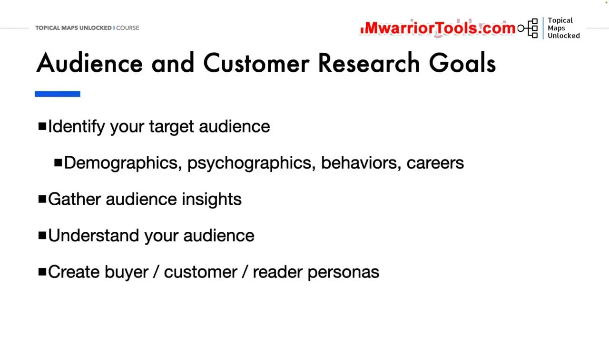
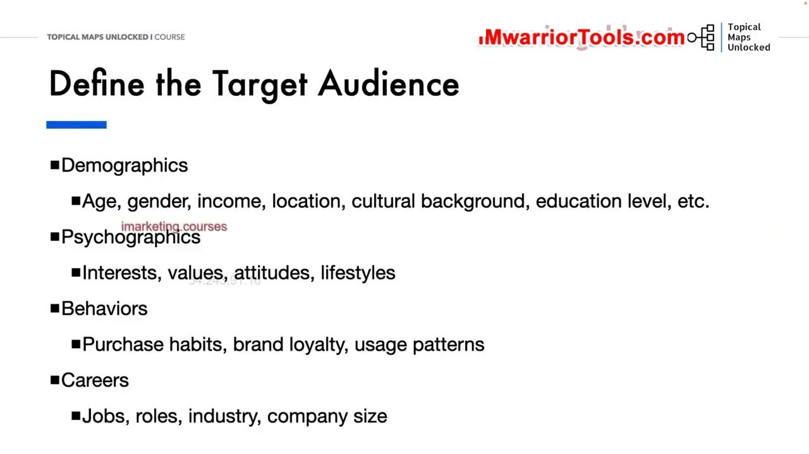
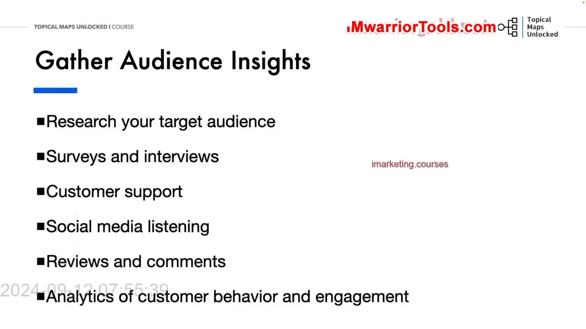
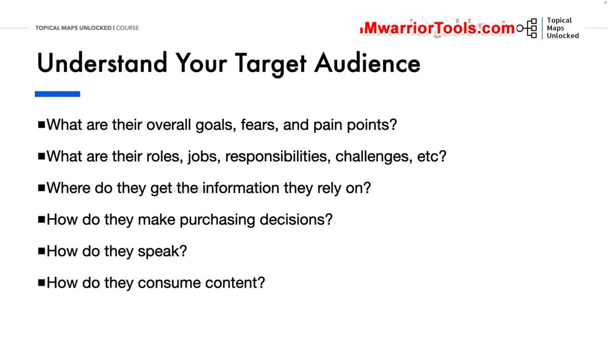
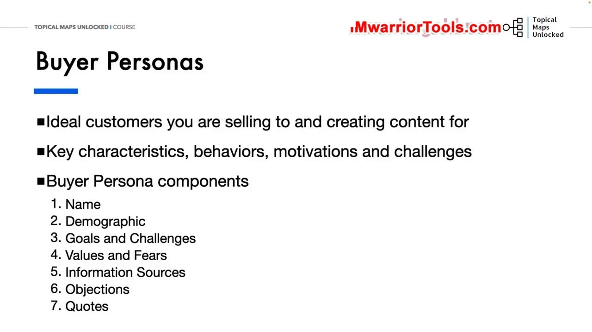
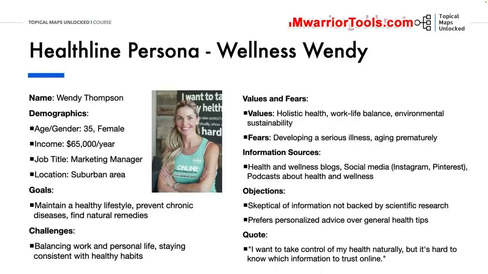
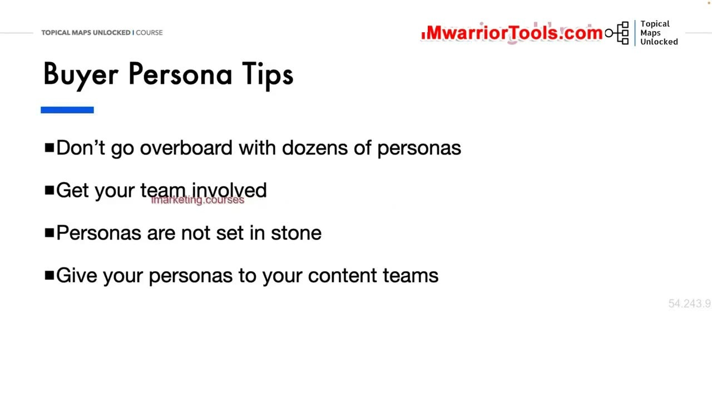

Audience Research
1. Mục tiêu tối thượng của nghiên cứu độc giả và khách hàng mục tiêu
Trong hoạt động SEO và sản xuất nội dung số, một sai lầm chết người mà rất nhiều người mắc phải là chỉ biết cắm đầu vào việc nghiên cứu từ khóa thuần túy. Họ nhìn vào các con số lượng tìm kiếm (Search volume) và độ khó (Keyword difficulty) như những thực thể vô tri mà hoàn toàn quên mất rằng: đằng sau mỗi lượt gõ phím tìm kiếm luôn luôn là một con người bằng xương bằng thịt với những nhu cầu, nỗi sợ và cảm xúc thực tế.
Mục tiêu tối thượng của bài học Audience Research (Nghiên cứu đối tượng khán giả) là giúp người làm SEO thoát khỏi cái bẫy kỹ thuật số đơn thuần để thấu hiểu tường tận độc giả của mình. Bạn cần nắm rõ: Họ thực sự là ai? Họ đang phải đối mặt với những vấn đề nan giải nào trong cuộc sống và công việc? Họ tìm kiếm câu trả lời ở những đâu? Và điều gì sẽ là động lực quyết định thôi thúc họ tin tưởng giải pháp của bạn?
Quá trình này bao gồm 5 mục tiêu then chốt: Xác định chính xác đối tượng mục tiêu; Thu thập các dữ liệu thấu cảm (Audience Insights); Thấu hiểu sâu sắc hành vi tâm lý; và Đúc kết thành các bộ chân dung khách hàng lý tưởng (Buyer/Reader Personas) chuẩn xác để định hướng toàn bộ chiến lược nội dung sau đó.

2. Bốn tầng lớp định nghĩa đối tượng mục tiêu: Nhân khẩu học, Tâm lý học, Hành vi và Nghề nghiệp
Để xây dựng một bức tranh độc giả chân thực và sắc nét, Yoyao hướng dẫn bóc tách đối tượng thông qua 4 tầng lăng kính thông tin:
- Demographics (Nhân khẩu học): Các thông tin định lượng nền tảng bao gồm độ tuổi, giới tính, mức thu nhập hàng năm, vị trí địa lý sinh sống (thành thị hay nông thôn), nền tảng văn hóa và trình độ học vấn. Nhân khẩu học giúp bạn phác thảo bộ khung căn bản của người đọc.
- Psychographics (Tâm lý học): Đi sâu vào thế giới nội tâm của độc giả: Sở thích cá nhân, hệ giá trị sống mà họ tôn thờ, thái độ đối với các vấn đề xã hội và lối sống sinh hoạt hàng ngày. Tâm lý học giải thích tại sao họ lại quan tâm đến chủ đề của bạn.
- Behaviors (Hành vi tiêu dùng): Cách thức họ tương tác với thương hiệu: Thói quen mua sắm trực tuyến, mức độ trung thành với các nhãn hàng quen thuộc, cách họ sử dụng sản phẩm và các kiểu mẫu tương tác nội dung trên website.
- Careers (Nghề nghiệp và vị trí công tác): Vị trí công việc cụ thể, vai trò và trách nhiệm trong tổ chức, lĩnh vực ngành nghề hoạt động và quy mô công ty nơi họ làm việc. Đối với các website B2B, yếu tố nghề nghiệp là chìa khóa quyết định việc lựa chọn văn phong chuyên môn phù hợp.

3. Năm phương pháp thực chiến thu thập dữ liệu thấu cảm (Gather Audience Insights)
Dữ liệu về độc giả không bao giờ được phép chỉ là những suy đoán cảm tính ngồi trong phòng máy lạnh. Yoyao chỉ ra 5 kênh thực tế giúp bạn thu thập các dữ liệu thấu cảm (Audience Insights) chân thực nhất:
- Nghiên cứu khảo sát và phỏng vấn trực tiếp (Surveys & Interviews): Trò chuyện trực tiếp với những khách hàng hiện tại. Đây là mỏ vàng thông tin giúp bạn lắng nghe chính xác những băn khoăn, nỗi trăn trở bằng chính ngôn từ đời thường mà họ sử dụng.
- Khai thác dữ liệu từ đội ngũ chăm sóc khách hàng (Customer Support): Bộ phận hỗ trợ khách hàng là nơi tiếp nhận hàng ngày hàng giờ những câu hỏi lặp đi lặp lại, những lời phàn nàn và những rào cản khiến người dùng bối rối khi sử dụng dịch vụ.
- Lắng nghe mạng xã hội (Social Media Listening): Tham gia và quan sát các cuộc thảo luận tự nhiên trên các hội nhóm Facebook, diễn đàn Reddit, cộng đồng Quora hay các nhóm Discord chuyên ngành để xem mọi người đang bức xúc điều gì nhất.
- Phân tích các bài đánh giá và bình luận (Reviews & Comments): Đọc kỹ các đánh giá 1 sao và 5 sao của khách hàng về sản phẩm của đối thủ cạnh tranh trên Amazon hay các trang thương mại điện tử để tìm ra những điểm thất vọng mà đối thủ chưa giải quyết được.
- Phân tích hành vi trên trang (Analytics): Xem xét các dữ liệu định lượng từ Google Analytics: Bài viết nào giữ chân người đọc lâu nhất? Tỷ lệ thoát trang ở đâu cao? Những luồng hành vi điều hướng nào phổ biến nhất trên website?

4. Thấu hiểu sâu sắc tâm tư: Nỗi đau, Nguồn tin cậy và Cách tiêu thụ nội dung
Khi đã có dữ liệu, bước tiếp theo là đặt mình vào vị trí của độc giả để trả lời 5 câu hỏi then chốt nhằm thấu hiểu sâu sắc người dùng:
- Mục tiêu tổng thể, nỗi sợ hãi và điểm đau (Pain points) lớn nhất của họ là gì? Họ đang mất ngủ vì vấn đề gì? Mục tiêu mà họ khao khát đạt được trong 6 tháng tới là gì?
- Vai trò, công việc, trách nhiệm và những thách thức hàng ngày của họ là gì? Áp lực công việc nào đang đè nặng lên vai họ?
- Họ lấy thông tin đáng tin cậy từ những nguồn nào? Khi gặp vấn đề, họ sẽ tìm đến bác sĩ, đọc bài nghiên cứu khoa học, nghe podcast chuyên gia, hay lướt TikTok xem video ngắn?
- Họ đưa ra quyết định mua hàng như thế nào? Họ tự quyết định hay phải thông qua ban giám đốc? Yếu tố nào thuyết phục họ nhất (giá cả, uy tín, chính sách bảo hành, hay lời chứng thực của người khác)?
- Họ nói chuyện bằng ngôn ngữ nào và tiêu thụ nội dung theo cách nào? Họ thích đọc các bài phân tích chuyên sâu dài 3.000 từ, hay họ chỉ muốn xem các bảng tóm tắt infographics và video hướng dẫn trực quan?

5. Cấu trúc chuẩn của một hồ sơ Chân dung khách hàng lý tưởng (Buyer Persona)
Buyer Persona (Chân dung khách hàng lý tưởng) là một hình mẫu bán hư cấu đại diện cho những khách hàng hoàn hảo nhất mà bạn đang bán hàng và tạo nội dung phục vụ. Một hồ sơ Persona hoàn chỉnh bao gồm 7 thành phần cấu trúc rõ ràng:
- 1. Tên gọi và hình ảnh đại diện (Name & Avatar): Đặt một cái tên dễ nhớ kèm một bức ảnh chân dung cụ thể để nhân cách hóa nhân vật trong tâm trí đội ngũ sản xuất nội dung.
- 2. Thông tin nhân khẩu học (Demographics): Tuổi tác, giới tính, mức thu nhập hàng năm, nghề nghiệp và môi trường sinh sống.
- 3. Mục tiêu và Thách thức (Goals & Challenges): Những điều họ khao khát vươn tới và các rào cản thực tế đang ngăn trở họ.
- 4. Hệ giá trị và Nỗi sợ hãi (Values & Fears): Những nguyên tắc họ coi trọng nhất và những rủi ro khiến họ lo lắng tột cùng.
- 5. Nguồn thông tin đáng tin cậy (Information Sources): Các kênh truyền thông, ấn phẩm, chuyên gia và nền tảng mà họ đặt niềm tin tuyệt đối khi tìm kiếm giải pháp.
- 6. Rào cản mua hàng (Objections): Toàn bộ những nghi ngại, do dự khiến họ chưa sẵn sàng chi tiền hoặc đăng ký sử dụng dịch vụ của bạn.
- 7. Câu nói trích dẫn tiêu biểu (Quote): Một câu nói ngắn gọn tóm lược trọn vẹn nỗi lòng, động lực và tâm tư sâu kín nhất của họ.

6. Phân tích hai Persona thực tế của Healthline: Wellness Wendy và Concerned Carl
Để minh họa bài học một cách sống động, Yoyao phân tích chi tiết hai chân dung độc giả hoàn toàn đối lập của trang y tế khổng lồ Healthline:
1. Wellness Wendy (35 tuổi, Nữ, Thu nhập 65.000$/năm, Marketing Manager, sống ở ngoại ô):
- Mục tiêu: Duy trì lối sống lành mạnh toàn diện, phòng ngừa bệnh tật sớm, cân bằng cuộc sống và công việc, tìm kiếm các liệu pháp thảo dược tự nhiên.
- Nỗi sợ & Thách thức: Sợ mắc các bệnh mãn tính khi về già, lão hóa sớm; gặp khó khăn trong việc duy trì lối sống lành mạnh giữa lịch làm việc bận rộn.
- Nguồn thông tin: Blog chăm sóc sức khỏe, Instagram, Pinterest, Podcast y tế phong cách sống.
- Rào cản: Cực kỳ hoài nghi các thông tin thiếu căn cứ khoa học; ưu tiên lời khuyên cá nhân hóa thay vì mẹo vặt chung chung.
- Trích dẫn: "Tôi muốn chủ động kiểm soát sức khỏe của mình một cách tự nhiên, nhưng rất khó để biết thông tin nào trên mạng là thực sự đáng tin."
2. Concerned Carl (52 tuổi, Nam, Thu nhập 85.000$/năm, Giáo viên trung học, sống ở thành thị):
- Mục tiêu: Kiểm soát căn bệnh tiểu đường tuýp 2 mới được chẩn đoán, giảm cân an toàn, tuân thủ phác đồ điều trị của bác sĩ.
- Nỗi sợ & Thách thức: Lo sợ các biến chứng nguy hiểm của bệnh tiểu đường khiến ông trở thành gánh nặng cho con cái; khó khăn trong việc thay đổi những thói quen ăn uống cố hữu suốt 30 năm qua và bối rối trước các thuật ngữ y khoa phức tạp.
- Nguồn thông tin: Bác sĩ điều trị trực tiếp, các chuyên gia y tế đầu ngành, các hội nhóm hỗ trợ bệnh nhân tiểu đường.
- Rào cản: Cảm thấy choáng ngợp và hoang mang trước khối lượng thông tin sức khỏe khổng lồ nhưng hỗn loạn trên mạng; nghi ngờ tính xác thực của các bài thuốc dân gian.
- Trích dẫn: "Tôi cần những thông tin y khoa thật sự rõ ràng, thẳng thắn và đáng tin cậy từ chuyên gia để giúp tôi kiểm soát bệnh tình và cải thiện sức khỏe tổng thể."
Rõ ràng, Wendy và Carl cần hai loại nội dung hoàn toàn khác nhau: Wendy cần các công thức sinh tố, bài tập yoga giải tỏa căng thẳng; trong khi Carl cần các hướng dẫn y khoa thận trọng, bảng theo dõi đường huyết và các bài phân tích tác dụng phụ của thuốc một cách dễ hiểu.

7. Ứng dụng Persona vào chiến lược nội dung và 4 lời khuyên cốt lõi
Khi đã có các chân dung độc giả rõ ràng, toàn bộ quy trình sản xuất nội dung sẽ được nâng tầm vượt bậc:
- Lên ý tưởng nội dung chuẩn xác (Content Ideation): Bạn sẽ biết chính xác những câu hỏi nào họ đang tìm kiếm và vấn đề cụ thể nào họ cần giải quyết ngay hôm nay để đưa vào kế hoạch bài viết.
- Lựa chọn định dạng nội dung phù hợp (Content Format): Bạn biết độc giả của mình thích đọc bài viết hướng dẫn chuyên sâu dạng dài, xem video trực quan hay nghe tóm tắt âm thanh để tối ưu hóa nguồn lực sản xuất.
Yoyao kết thúc bài học với 4 lời khuyên thực tế mang tính xương máu:
- Đừng ôm đồm tạo ra hàng chục persona (Don't go overboard): Việc tạo ra quá nhiều chân dung sẽ làm phân tán nguồn lực và gây bối rối cho đội ngũ viết bài. Hãy bắt đầu tập trung vào 2–3 persona chính đại diện cho nhóm độc giả mang lại giá trị cao nhất.
- Lôi kéo toàn bộ đội ngũ cùng tham gia (Get your team involved): Đừng để việc xây dựng persona chỉ là nhiệm vụ riêng của người làm SEO. Hãy trao đổi trực tiếp với bộ phận bán hàng, đội ngũ chăm sóc khách hàng để thu thập những thông tin chân thực nhất từ thực tế.
- Persona không phải tượng đá cố định (Personas are not set in stone): Thị trường luôn biến động và hành vi người tiêu dùng thay đổi không ngừng. Hãy định kỳ rà soát và cập nhật lại chân dung độc giả khi thu thập thêm dữ liệu mới.
- Chia sẻ rộng rãi cho toàn bộ đội ngũ sáng tạo nội dung (Give your personas to your content teams): Đảm bảo mọi cây bút, biên tập viên và chuyên gia thiết kế đồ họa đều nắm rõ họ đang viết bài và phục vụ cho ai đọc.
Yoyao giao bài tập thực hành về nhà: Hãy mở bảng tính "Personas Sheet" được cung cấp trong khóa học và tự tay xây dựng ít nhất 2 chân dung độc giả hoàn chỉnh cho thương hiệu của chính bạn trước khi bước sang bài học tiếp theo.

Nguồn và đối chiếu
- Topical Maps Unlocked 2.0 · 03-Audience Research (Video bài học chính).
- Đối chiếu ngữ nghĩa với bản tiếng Anh: Bản Tiếng Anh/03-Brand and Content Strategy Module/03-Audience Research.mp4 (xác thực phân tích chân dung Healthline Wendy Thompson và Carl Johnson, các yếu tố Buyer Persona và bài tập thực hành).